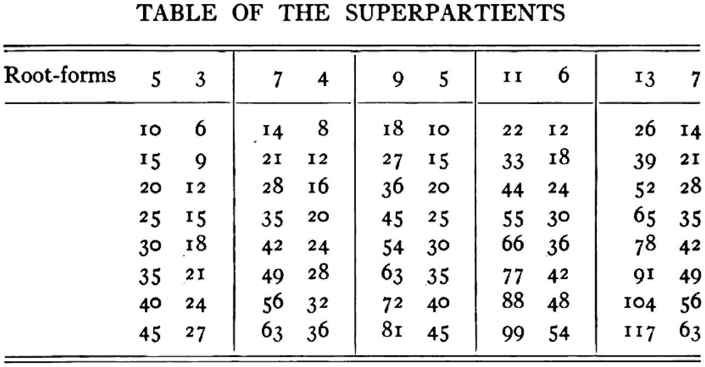

Chapter 21: Generation of Superpartients & Overview of Compound Species¶


1. The regular arrangement and orderly production of both species are discovered when we set forth the successive even and odd numbers, beginning with 3, and compare with them the simple series of odd numbers only, from 5 in succession, first to first—that is, 5 to 3,—second to second—that is, 7 to 4,—third to third—that is, 9 to 5,—fourth to fourth—that is, 11 to 6,—and so on in the same order as far as you like. In this way the forms of the superpartient and the subsuperpartient, in due order, will be disclosed through the root-forms of each species, the superbipartient first, then the supertripartient, superquadripartient, and superquintipartient, and further in succession in similar manner; for after the root-forms of each species the ones which follow them will be produced by doubling, or tripling, both the terms, and in general by multiplying after the regular forms of the multiple.
5 |
3 |
7 |
4 |
9 |
5 |
11 |
6 |
13 |
7 |
|---|---|---|---|---|---|---|---|---|---|
10 |
6 |
14 |
8 |
18 |
10 |
22 |
12 |
26 |
14 |
15 |
9 |
21 |
12 |
27 |
15 |
33 |
18 |
39 |
21 |
20 |
12 |
28 |
16 |
36 |
20 |
44 |
24 |
52 |
28 |
25 |
15 |
35 |
20 |
45 |
25 |
55 |
30 |
65 |
35 |
30 |
18 |
42 |
24 |
54 |
30 |
66 |
36 |
78 |
42 |
35 |
21 |
49 |
28 |
63 |
35 |
77 |
42 |
91 |
49 |
40 |
24 |
56 |
32 |
72 |
40 |
88 |
48 |
104 |
56 |
45 |
27 |
63 |
36 |
81 |
45 |
99 |
54 |
117 |
63 |
2. It must be observed that from the two parts in addition to the whole which are contained in the greater term, we are to understand ‘third,’ in the case of three parts, ‘fourth,’ with four parts, ‘fifth,’
f. 0238 · p. 222with five, ‘sixth,’ and so on, so that the order of nomenclature is something like this: superbipartient, supertripartient, superquadripartient, then superquintipartient, and similarly with the rest.
3. Now the simple, uncompounded relations of relative quantity are these which have been enumerated. Those which are compounded of them and as it were woven out of two into one are the following, of which the antecedents are the multiple superparticular and multiple superpartient, and the consequents the ones that immediately arise in connection with each of the former, named with the prefix sub-; together with the multiple superparticular the submultiple superparticular, and with the multiple superpartient the submultiple superpartient. In the subdivision of the genera the species of the one will correspond to those of the other, these also having names with the prefix sub-.